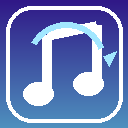

Browse your Navidrome library and bring tracks into the stock iOS 6 Music app from a jailbroken iPhone or iPod touch.
Add Cydia Repo Download .debSearch songs, albums, and artists, browse playlists, and preview track metadata before downloading.
Downloads screen shows queued, downloading, imported, failed, cancelled, and playlist aggregate states.
Manual memory management, armv7 Theos build, UIKit iOS 6 controls, and conservative Music library handling.
http://cydia.personaltechwiz.com/ as a source. Use HTTP, not HTTPS.